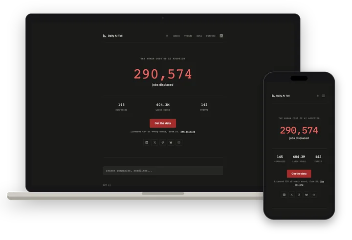

Daily AI Toll
Identity · Data site
A daily, sourced record of job cuts that public reporting links to AI adoption.
Visit ↗


About
Daily AI Toll keeps a running record of publicly reported job displacement linked to artificial intelligence. It aggregates the events, verifies them where possible and presents the count plainly, updated daily.
Collection is automated: an AI system scans public news sources each night, and every entry carries a source link, an excerpt, a causality class (direct, contributing or inferred) and a confidence score.
The methodology describes the figures as a lower-bound estimate, since many AI-related job losses go unreported or are attributed to other causes. The site asks readers to verify the data before relying on it.
Trends charts the cumulative and monthly totals, and the full event dataset is available as a licensed CSV for research or commercial use.
Butts Studios designed the identity and the data site.
Details
- What we made
- Identity · Data site
- Palette
-
- #A32D2D
- #EA605F
- #F5F3EE
- #1A1916
- Type
- Monospace for numbers and labels; plain sans for headlines.
- Captured
- October 2026
Gallery
7 images. Tap any one to see it full size.


Articles & notes
Published pages from Daily AI Toll: write-ups, docs and data. Each opens on its own site.
- dailyaitoll.com ↗MethodologyHow events are collected, classified by AI causality and scored for confidence
- dailyaitoll.com ↗TrendsCumulative and monthly charts of AI-linked job displacement over time
- dailyaitoll.com ↗Data DownloadsDataset fields, preview and license tiers for the full event CSV
- dailyaitoll.com ↗September 15, 2026Daily ledger entry listing three companies with sourced excerpts and confidence